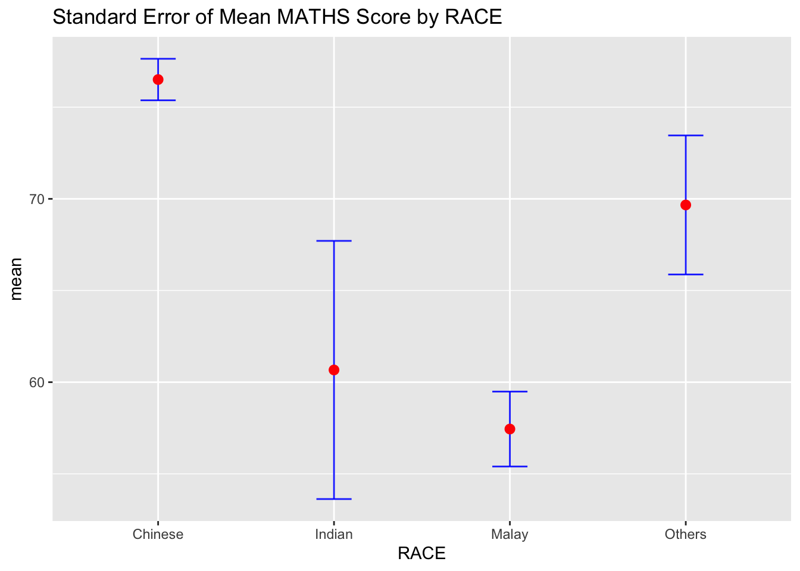
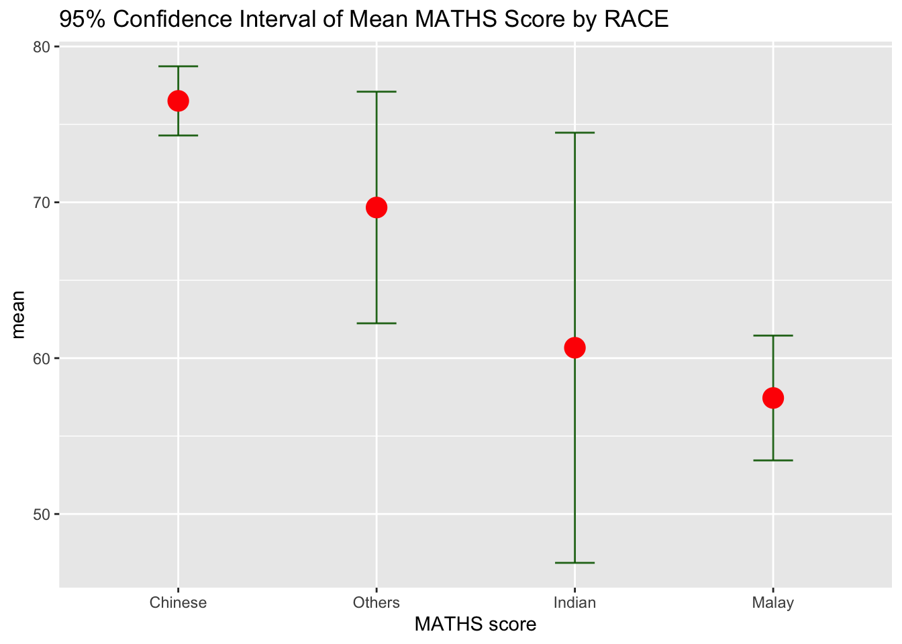
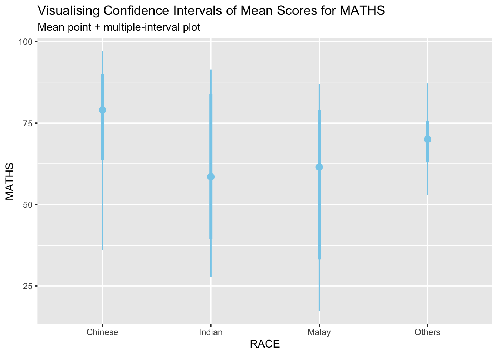
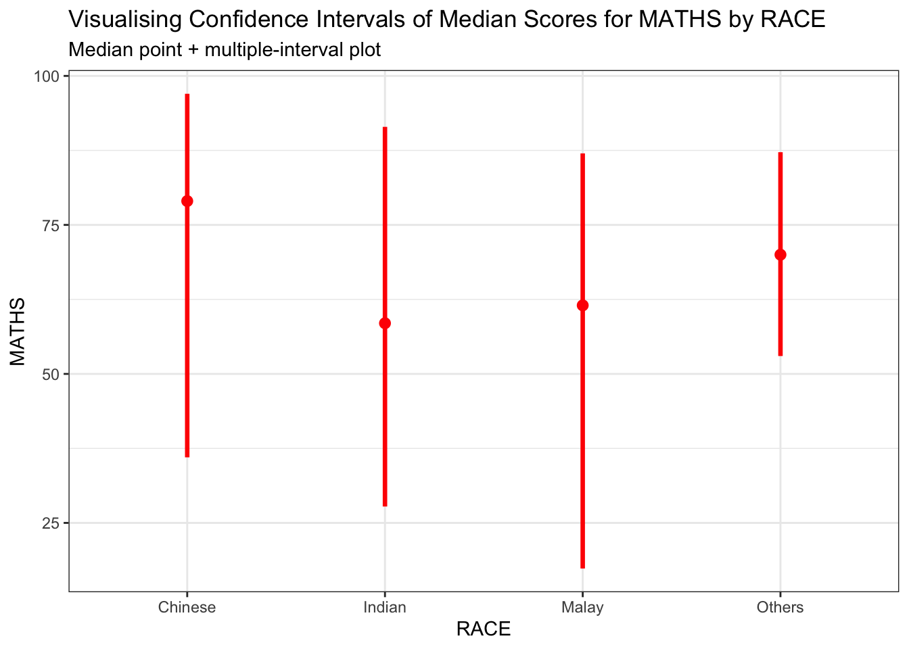
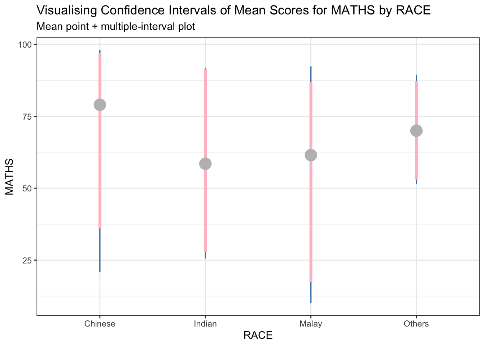
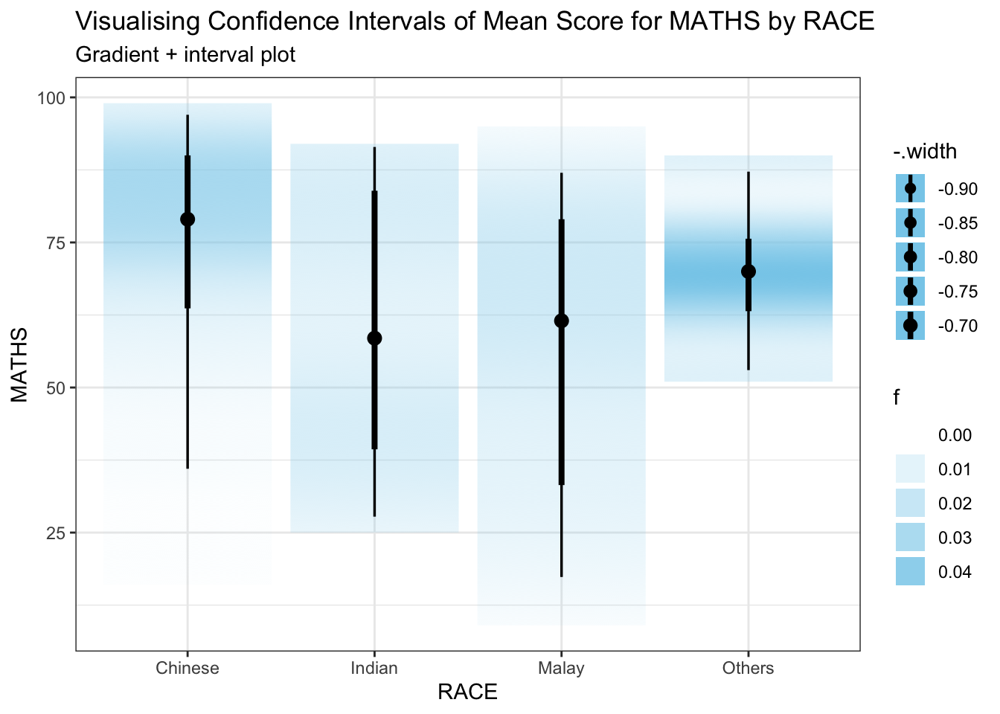
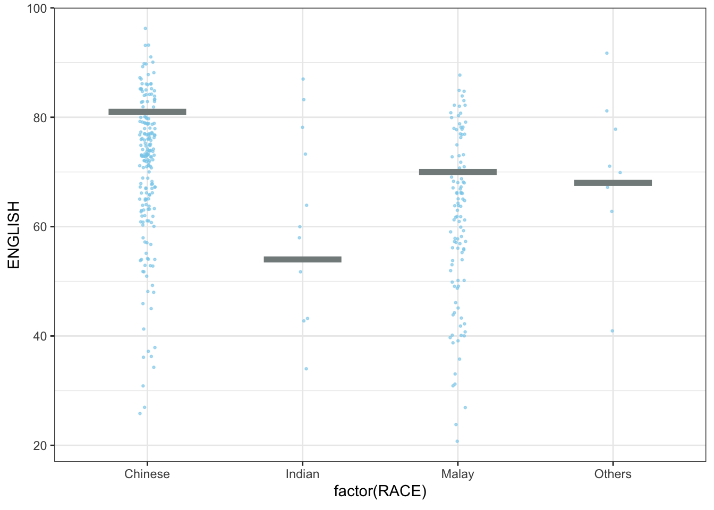
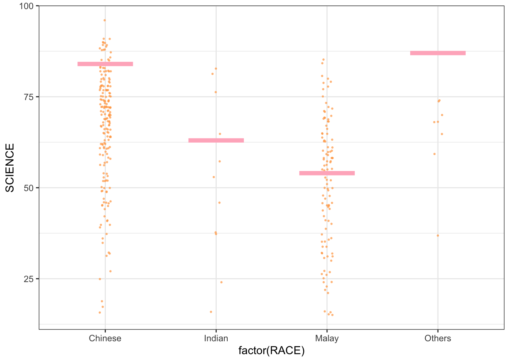

devtools::install_github("wilkelab/ungeviz")Hands-on_Ex04(3) - Visualising Uncertainty
1 Learning Outcome
In this chapter, we will do hands-on in creating statistical graphics for visualising uncertainty.
- to plot statistics error bars by using
ggplot2 - to plot interactive error bars by combining
ggplot2,plotlyandDT - to create advanced using
ggdist - to create hypothetical outcome plots (HOPs) with
ungevizpackage
2 Getting Started
2.1 Installing and loading packages
The following R packages will be used for this exercise:
tidyverse: a family of R packages for data science processplotly: can create interactive plotgganimate: can create animation plotDT: can display interactive HTML tablecrosstalk: to implement cross-widget interactions (currently linked brushing and filtering)ggdist: to visualise distribution and uncertainty
pacman::p_load(ungeviz, plotly, corsstalk,
DT, ggdist, ggridges,
colorspace, gganimate, tidyverse)2.2 Importing data
The Exam_data.csv dataset will be used for this exercise.
exam <- read_csv("Exam_data.csv")3 Visualising the uncertainty of point estimates: ggplot2 methods
A point estimate is a single number, such as a mean score. Uncertainty, is expressed as standard error, confidence interval, or credible interval. Don’t confuse the uncertainty of a point estimate with the variation in the sample.
Now, we will plot error bars of MATHS scores by RACE using the data provided in exam tibble data frame.
Code below will be used to derive the necessary summary statistics:
my_sum <- exam %>%
#group the observation by RACE; group_by() from dplyr package
group_by(RACE) %>%
#compute the count of observations, mean, standard deviation
summarise(
n=n(),
mean=mean(MATHS),
sd=sd(MATHS)
) %>%
#derive standard error of Maths by RACE
mutate(se=sd/sqrt(n-1)) The output is saved as a tibble data table called my_sum.
Summary of code above
group_by()from dplyr package is used to group the observation by RACEsummarise()is used to compute count of observations, mean, standard deviationmutate()is used to derive standard error of MATHS by RACE

üîëüîëüîë Next code is used to display my_sum tibble data frame in an HTML table format.
knitr:::kable(head(my_sum),
format = 'html')| RACE | n | mean | sd | se |
|---|---|---|---|---|
| Chinese | 193 | 76.50777 | 15.69040 | 1.132357 |
| Indian | 12 | 60.66667 | 23.35237 | 7.041005 |
| Malay | 108 | 57.44444 | 21.13478 | 2.043177 |
| Others | 9 | 69.66667 | 10.72381 | 3.791438 |
3.1 Plotting standard error bars of point estimates
Now, plotting the standard error bars for the mean score of MATHS by RACE.

Summary of code above
- The error bars are computed by using the formula
mean +/- se - For
geom_point(), it is important to indicatestat="identity"
ggplot(my_sum) +
geom_errorbar(
aes(x = RACE,
ymin=mean-se,
ymax=mean+se),
width = 0.2,
colour = "blue",
alpha = 0.9,
size = 0.5
) +
geom_point(
aes(x = RACE,
y = mean),
stat = "identity",
color = "red",
size = 2.5,
alpha = 1
) +
ggtitle("Standard Error of Mean MATHS Score by RACE")3.2 Plotting confidence interval of point estimates
Instead of plotting error bars of point estimates, we can also plot Confidence Intervals of the mean scores of MATHS by RACE.

ggplot(my_sum) +
geom_errorbar(
aes(x = reorder(RACE, -mean),
ymin=mean-1.96*se,
ymax=mean+1.96*se),
width=0.2,
colour="darkgreen",
alpha=0.9,
size=1
) +
geom_point(aes(
x = RACE,
y = mean),
stat="identity",
color="red",
alpha=1,
size=5
) +
labs(x = "MATHS score",
title = "95% Confidence Interval of Mean MATHS Score by RACE")
Summary of code
- The Confidence Intervals are computed by using the formula mean +/- 1.96*se
- The error bars are sorted using the average maths scores
labs()argument ofggplot2is used to change the x-axis label
3.3 Visualising the uncertainty of point estimates with interactive error bars
To plot interactive error bars for the 99% Confidence Interval of the mean score for MATHS by RACE.
The primary use for SharedData is to be passed to Crosstalk-compatible widgets in place of a data frame. Each SharedData$new(...) call makes a new “group” of widgets that link to each other, but not to widgets in other groups. You can also use a SharedData object from Shiny code in order to react to filtering and brushing from non-widget visualizations (like ggplot2 plots).
#install.packages("leaflet")
library(shiny)
library(crosstalk)
library(leaflet)
library(DT)
shared_df = SharedData$new(my_sum)
bscols(widths = c(4.5,8),
ggplotly((ggplot(shared_df) +
geom_errorbar(
aes(x = reorder(RACE, -mean),
ymin = mean-2.58*se,
ymax = mean+2.58*se),
width = 0.2,
colour = "blue",
alpha = 0.8,
size = 0.6
) +
geom_point(
aes(x = RACE,
y = mean,
text = paste("Race: ", `RACE`,
"<br>N: ", `n`,
"<br>Avg. Scores: ", round(mean, digits = 2),
"<br>95% CI:[",
round((mean-2.58*se), digits = 2), ",",
round((mean+2.58*se), digits = 2), "]")),
stat = "identity",
color = "pink",
size = 2.5,
alpha = 1) +
xlab("Race") +
ylab("Average Scores") +
theme_minimal() +
theme(axis.text.x = element_text(
angle = 45, vjust = 0.8, hjust = 1),
plot.title = element_text(size = 8, face = "bold")) +
ggtitle("99% Confidence Interval of <br>Average MATHS Score by RACE")),
tooltip = "text"),
DT::datatable(shared_df,
rownames = FALSE,
class = "compact",
width = "150%",
options = list(pageLength = 10,
scrollX=T),
colnames = c("No. of pupils",
"Avg. scores",
"Std Dev",
"Std Error")) %>%
formatRound(columns = c('mean', 'sd', 'se'),
digits = 2))4 Visualsing Uncertainty: ggdist package
ggdist for distribution and uncertainty visualisation:
It is an R package that provides flexible set of ggplot2 geoms and stats designed for visualising distributions and uncertainty.
It can visualise both frequentist and Bayesian uncertainty. Uncertainty visualization can be unified through the perspective of distribution visualization.
- Frequentist model: one visualises confidence distribution or bootstrap distributions (see vignette (“freq-uncertainty-vis”) ::: column-margin ## Setup for Frequentist uncertainty visualization
Frequentist uncertainty visualization Setup
library(dplyr)
library(tidyr)
library(ggdist)
library(ggplot2)
library(broom)
library(distributional)
theme_set(theme_ggdist())- Bayesian model: one visualises probability distributions (see
tidyversepackage that builds on top ofggdist)
4.1 Visualising the uncertainty of point estimates: ggdist methods (I)
stat_pointinterval() of ggdist is used in the code below to build a visualisation to display distribution of MATHS scores by RACE.

exam %>%
ggplot(aes(x= RACE,
y = MATHS)) +
stat_pointinterval(
color = "skyblue"
) +
labs(
title = "Visualising Confidence Intervals of Mean Scores for MATHS",
subtitle = "Mean point + multiple-interval plot"
)
Note
This function comes with many arguments. See next tab for example.
Added the following arguments
- .width = 0.95
- .point = median
- .interval = qi
- color = red
Show the code
theme_set(theme_bw())
exam %>%
ggplot(aes(
x = RACE, y = MATHS)) +
stat_pointinterval(
.width = 0.95,
.point = median,
.interval = qi,
color = "red") +
labs(title = "Visualising Confidence Intervals of Median Scores for MATHS by RACE",
subtitle = "Median point + multiple-interval plot")
4.2 Practice
Tip
DIY to show 95% and 99% confidence intervals.
Show the code
exam %>%
ggplot(aes(x = RACE, y = MATHS)) +
stat_pointinterval(
show.legend = FALSE,
.width = c(0.95, 0.99),
aes(interval_color = stat(level)),
point_fill = "grey",
point_colour = "grey",
point_size = 5
) +
#Define colors of the intervals
scale_color_manual(
values = c("steelblue", "pink"),
aesthetics = "interval_color"
) +
labs(
title = "Visualising Confidence Intervals of Mean Scores for MATHS by RACE",
subtitle = "Mean point + multiple-interval plot"
) +
theme(
panel.background = element_rect(fill = "transparent", color = NA),
plot.background = element_rect(fill = "transparent", color = NA),
legend.background = element_rect(fill = "transparent", color = NA)
)
4.3 Visualising the uncertainty of point estimates: ggdist methods (II)
stat_gradientinterval() of ggdist is used in the code below to build a visualisation for displaying distribution of MATHS scores by RACE.
Show the code
exam %>%
ggplot(
aes(x = RACE,
y = MATHS)) +
stat_gradientinterval(
fill = "skyblue",
show.legend = TRUE
) +
labs(
title = "Visualising Confidence Intervals of Mean Score for MATHS by RACE",
subtitle = "Gradient + interval plot"
)
5 Visualising Uncertainty with Hypothetical Outcome Plots (HOPs)
1️⃣ Step 1: Install ungeviz package
devtools::install_github("wilkelab/ungeviz")2️⃣ Step 2: Launch the application in R
library(ungeviz)Show the code
ggplot(data = exam,
aes(x = factor(RACE), y = MATHS)) +
geom_point(position = position_jitter(
height = 0.3, width = 0.05),
size = 0.6, color = "darkolivegreen", alpha = 0.6) +
geom_hpline(data = sampler(25, group = RACE),
height = 0.6, color = "pink") +
theme_bw() +
transition_states(.draw, 1, 3)
Show the code
#.draw is a generated column indicating the sample draw.Show the code
ggplot(data = exam,
aes(x = factor(RACE), y = ENGLISH)) +
geom_point(position = position_jitter(
height = 0.3, width = 0.05),
size = 0.5, color = "skyblue", alpha = 0.6) +
geom_hpline(data = sampler(25, group = RACE),
height = 0.6, color = "azure4") +
theme_bw() +
transition_states(.draw, 1, 3)
Show the code
#.draw is a generated column indicating the sample draw.Show the code
ggplot(data = exam,
aes(x = factor(RACE), y = SCIENCE)) +
geom_point(position = position_jitter(
height = 0.3, width = 0.05),
size = 0.4, color = "tan1", alpha = 0.6) +
geom_hpline(data = sampler(25, group = RACE),
height = 0.6, color = "pink1") +
theme_bw() +
transition_states(.draw, 1, 3)
Show the code
#.draw is a generated column indicating the sample draw.üìñ Reading resource for HOPs: